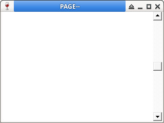

Steward
分享是一種喜悅、更是一種幸福
程式語言 - Flat Assembler (FASM) - Win32 API - Set Scrollbar
參考資訊：
https://board.flatassembler.net/
當視窗的可視區域(如：300x300像素)小於顯示圖片大小(如：640x480像素)時，這時可以使用Windows視窗元件Scrollbar，用來做顯示位置調整的動作，Scrollbar元件有垂直和水平兩種方向並且提供視窗事件回報機制(WM_VSCROLL、WM_HSCROLL)，因此，這裡的Scrollbar元件並不能夠自動幫忙做顯示位置調整的動作，取而代之的是，在收到WM_VSCROLL、WM_HSCROLL事件時，使用者必須自己決定哪些東西要顯示在視窗的可視區域上
main.asm
format PE GUI 4.0
entry start
include "c:\fasm\include\win32a.inc"
include "c:\fasm\include\api\kernel32.inc"
include "c:\fasm\include\api\gdi32.inc"
include "c:\fasm\include\api\user32.inc"
section ".idata" import data readable writeable
library \
gdi32, "gdi32.dll", \
user32, "user32.dll", \
kernel32, "kernel32.dll"
section ".data" data readable writeable
hWin DD 0
hInstance DD 0
pCommand DD 0
pDefWndProc DD 0
szName DB "main",0
SLUP DB "LINE++",0
SLDN DB "LINE--",0
SPUP DB "PAGE++",0
SPDN DB "PAGE--",0
section ".text" code readable executable
proc WndProc hWnd, uMsg, wParam, lParam
mov eax, [uMsg]
cmp eax, WM_VSCROLL
je .vscroll
cmp eax, WM_CLOSE
je .close
cmp eax, WM_DESTROY
je .destroy
invoke CallWindowProc, [pDefWndProc], [hWnd], [uMsg], [wParam], [lParam]
jmp .finish
.vscroll:
cmp word [wParam], SB_LINEUP
je .sb_line_up
cmp word [wParam], SB_LINEDOWN
je .sb_line_down
cmp word [wParam], SB_PAGEUP
je .sb_page_up
cmp word [wParam], SB_PAGEDOWN
je .sb_page_down
jmp .finish
.sb_line_up:
invoke SetWindowText, [hWnd], SLUP
jmp .finish
.sb_line_down:
invoke SetWindowText, [hWnd], SLDN
jmp .finish
.sb_page_up:
invoke SetWindowText, [hWnd], SPUP
jmp .finish
.sb_page_down:
invoke SetWindowText, [hWnd], SPDN
jmp .finish
.close:
invoke DestroyWindow, [hWnd]
xor eax, eax
jmp .finish
.destroy:
invoke PostQuitMessage, 0
xor eax, eax
jmp .finish
.finish:
ret
endp
proc WinMain hInst, hPrevInst, CmdLine, CmdShow
local msg:MSG
invoke CreateWindowEx, WS_EX_LEFT, WC_DIALOG, szName, WS_OVERLAPPEDWINDOW or WS_VISIBLE or WS_VSCROLL, 0, 0, 320, 240, NULL, NULL, NULL, NULL
mov [hWin], eax
invoke SetWindowLong, [hWin], GWL_WNDPROC, WndProc
mov [pDefWndProc], eax
invoke SetScrollRange, [hWin], SB_VERT, 0, 100, FALSE
invoke SetScrollPos, [hWin], SB_VERT, 50, TRUE
@@:
lea eax, [msg]
invoke GetMessage, eax, NULL, 0, 0
cmp eax, 0
je @f
lea eax, [msg]
invoke DispatchMessage, eax
jmp @b
@@:
mov eax, [msg.wParam]
ret
endp
start:
invoke GetModuleHandle, NULL
mov [hInstance], eax
invoke GetCommandLine
mov [pCommand], eax
stdcall WinMain, [hInstance], NULL, [pCommand], SW_SHOWNORMAL
invoke ExitProcess, eax
完成
